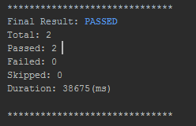
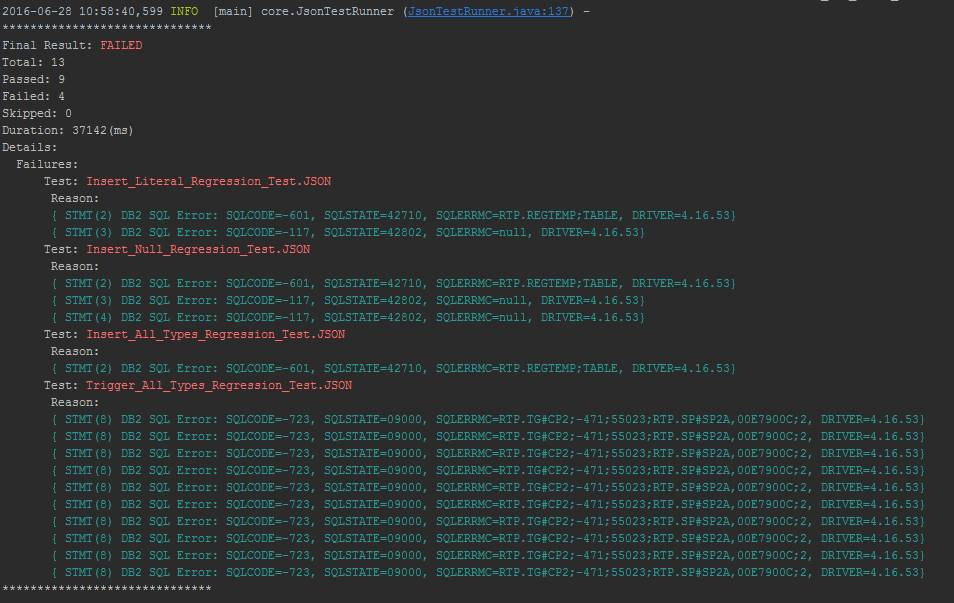
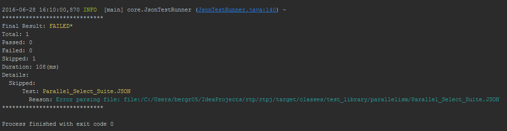

Test Tracker
The test tracker is a short report printed at the end of the log. It is used to tell you how many tests passed, were skipped, or failed. It also contains the timed duration of the test.
When executing a single file JSON test the tracker will it as one test. Therfore, if multiple single file JSON test are passed in as parameters, each will count as one test.
When executing a JSON test suite the tracker will count submit each test as though it was specified as a separate argument. Therefore, if only one suite is to be executed, the number of tests executed will be equal to the number of tests specified in the parameter.
Passed Test Summary

Failed Test Summary
When a test has failed the final test output will contain a "Details" section that will contain additional information about each failure. The section will include a list of failed tests, in addition each failed test will contain information about which statement failed and the cause.
In the example below 4 tests have failed. The first failed test had problems executing statements 2 and 3 receiving a -601 and -117 SQLCODES respectively.

Skipped Test Summary
If there are no failed tests, but a test was skipped because it could not be executed, the summary will show a FAILED* status.

When has a test "Passed"
A test is considered passed when all statement in a single file JSON test have been executed and the DB2 connection has been closed. If a threading parameter is present, the test will only be considered passed if all threads complete successfully.
Why would a test be "Skipped"
A test is skipped when...
- The JSON file can not be read or does not exist
- The JSON file is missing a test or suite parameter
- The test is missing a connection or statements parameter
Why would a test have "Failed"
A test can fail when...
- An SQL Error is encountered when executing a statement that is not expected
- A result set is returned with different properties than were expected
- Errors occur when setting or retrieving parameters
- An error occurs when closing the Database Connection